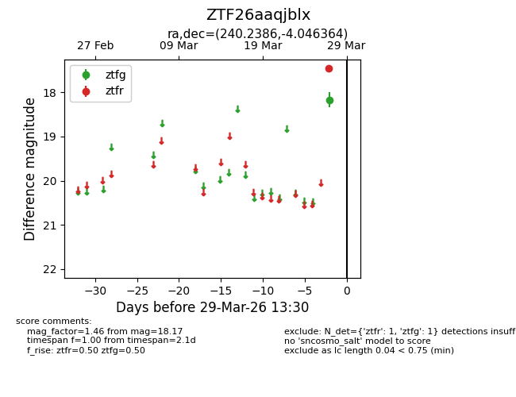
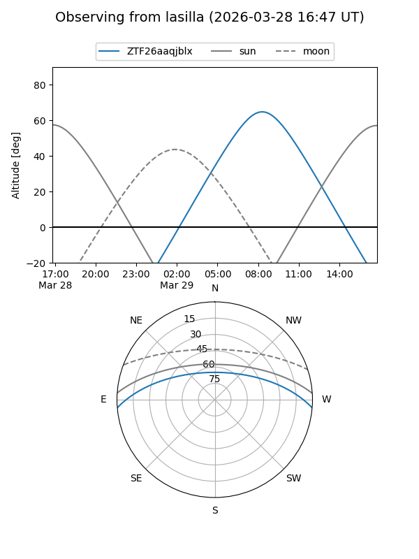
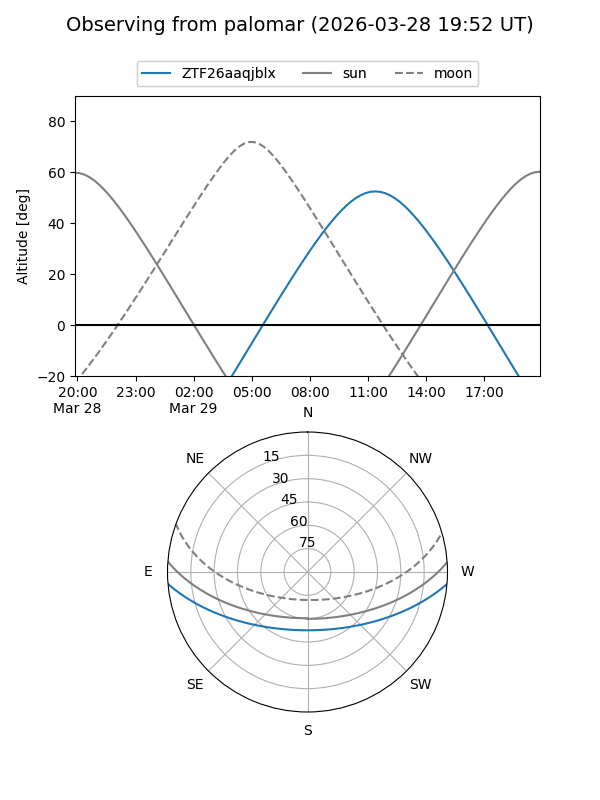

ZTF26aaqjblx
Target ZTF26aaqjblx at 2026-03-29 13:33
Aliases and brokers:
FINK: link
Lasair: link
ALeRCE: link
alt names
ZTF26aaqjblx (ztf,fink_ztf)
Coordinates:
equatorial (ra, dec) = 240.2386,-4.04636
equatorial (HMS+DMS) = 16:00:57.27,-04:02:46.91
galactic (l, b) = (6.1307,+34.67854)
Flags:
Photometry:
last ztfg=18.17, ztfr=17.46
1 ztfg, 1 ztfr detections
Lightcurve

Visibility


Additional plots